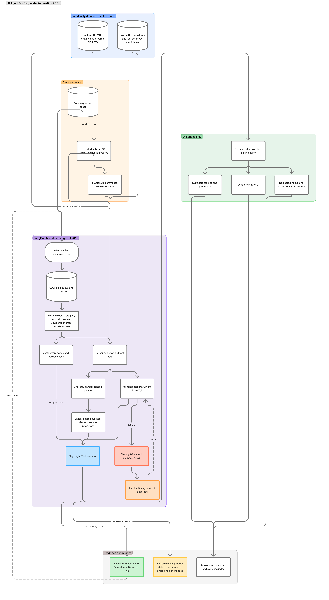

1,141
Workbook cases
5,110 documented steps
UI E2E automation agent
A LangGraph and Grok control layer that reads the regression workbook, explores live UIs, prepares safe test data, runs Playwright across each required scope, and updates coverage only after real passing evidence.
Scale the work of turning manual cases into UI tests while keeping a strict boundary between generated scenarios and proven coverage.
5,110 documented steps
Applicable vendor sandbox paths
Per generic case before role variants
At last local check · 5 Nov 2026
Each case needs the right client, role, data, browser, viewport, theme, and sometimes a vendor UI. The agent coordinates those steps one case at a time and preserves the difference between “script generated” and “test passed.”
The control plane moves from requirements to verified evidence. Each gate can block the case when its prerequisites are missing.
Parse Excel steps, expected results, role, preconditions, and linked Jira evidence.
Read non-patient references from PostgreSQL MCP; store synthetic candidates in SQLite.
Inspect authenticated Surgimate and vendor controls, then draft a structured scenario with Grok.
Execute Playwright UI assertions across the matrix. Retry only bounded, safe repairs.
Verify every result, then record run IDs, report link, and Passed in Excel.
PostgreSQL and any future vendor API checks are read-only. Admin and vendor actions use dedicated UI sessions.
Follow the path from case requirements to real UI execution and verified evidence. The original Figma diagram is available below for full detail.
One incomplete case at a time; SQLite stores the job queue and state.
Chrome, Edge, and WebKit across selected viewports and light/dark themes.
A model output is never a passing test result.
Original diagram supplied for this project · public-safe architecture only.

This calculator shows the number of potential scopes. It is an illustration of required work, not a live run count or a pass claim.
All configured dimensions selected.
A generated script or successful login is not enough. The publisher requires exact case, project, and scope results before updating Excel.
The target case must have one real passing result in the requested project. Skips and unexpected results do not count.
Every applicable scope must pass. Failed, blocked, or review-needed runs stop progression to the next case.
Excel receives Automated, Passed, run IDs, and an evidence-index link after the workbook save is checked.
No PHI, credentials, private Jira content, vendor accounts, screenshots, or run artifacts are embedded in this page. The evidence index stays in private agent storage.
These are code and local-check findings, not a live production dashboard. Last checked 5 November 2026.